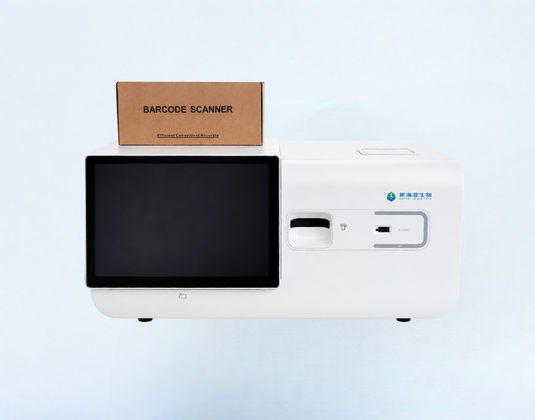
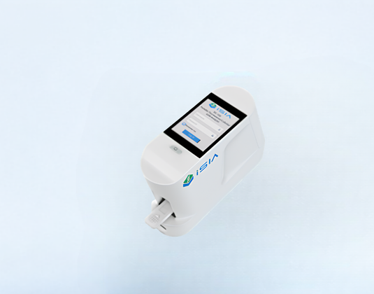

Alergias
iSIA02 — Analizador de sobremesa
Inmunoanalizador de 12 canales con tecnología de puntos cuánticos. IgE Total, rango 20–6 000 ng/mL, CE.
Ver ficha
Inmunoanalizador portátil de Isia Bio basado en tecnología dual de fluorescencia de puntos cuánticos y oro coloidal. Integra IgE total en su menú, junto a parámetros de inflamación, tiroides, marcadores cardíacos y más, en un formato de mano compacto con batería interna.
Despacho a laboratorios y centros de atención en todo Chile con soporte técnico incluido.
El IFC-100 de Isia Bio es un inmunoanalizador portátil que combina en un solo instrumento dos tecnologías de detección: fluorescencia de puntos cuánticos y oro coloidal. Esta plataforma dual permite ejecutar un amplio panel de pruebas —incluyendo IgE total para el diagnóstico de alergias— desde la cabecera del paciente o en laboratorios con recursos limitados.
Gracias a su batería interna de 7,4 V y su diseño compacto (175 × 52 × 123 mm), el IFC-100 está concebido para operar en condiciones de campo, urgencia o consulta ambulatoria sin necesidad de conexión permanente a la red eléctrica. Su tecnología de puntos cuánticos ofrece ultra sensibilidad, fotoestabilidad superior y capacidad de detección simultánea de múltiples analitos en una sola prueba.
| Modelo | IFC-100 |
|---|---|
| Tecnología | Fluorescencia de puntos cuánticos + oro coloidal |
| Dimensiones | 175 mm (largo) × 52 mm (ancho) × 123 mm (alto) |
| Alimentación | CA 220 V, 50 Hz · Entrada host CC 12 V, 2,5 A |
| Batería interna | CC 7,4 V |
| Temperatura de operación | +10 °C a +30 °C |
| Humedad relativa | 20% a 80%, sin condensación |
| Desviación relativa (DR) | ≥ 3% |
| Correlación lineal (R) | ≥ 0,990 |
| Coeficiente de variación (CV) | ≤ 3% |
| Marca | Isia Bio (isiabio.com) |